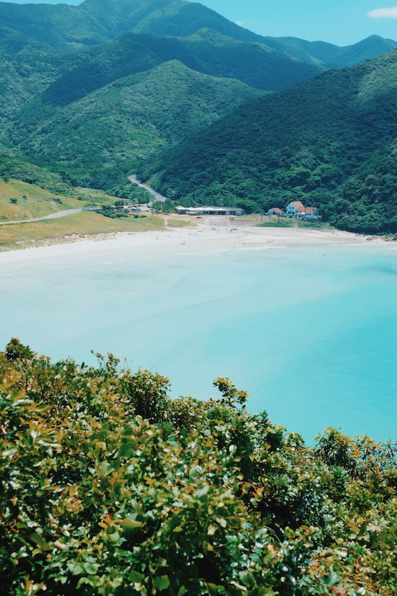
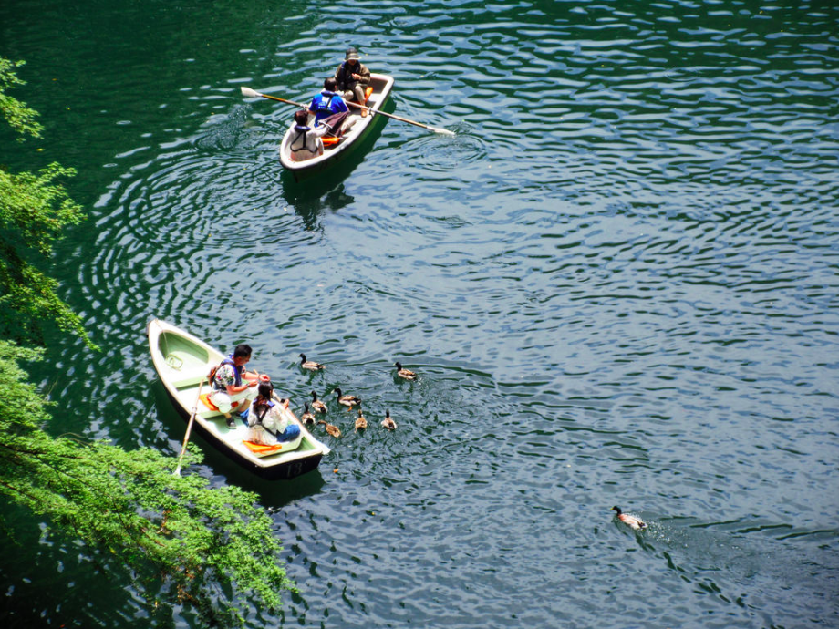

Kyushu (九州, Kyūshū, literally "nine provinces") is Japan's third largest island, located southwest of the main island Honshu. An early center of Japanese civilization, Kyushu is home to active volcanoes, waterfalls, natural hot springs, and semi-tropical coastlines.
Beyond Tokyo's urban landscape and Kyoto's teeming temples and shrines lies Japan's hidden gem of Kyushu. The gateway to Japan and Asia, Kyushu is a Zen-filled haven complete with hot springs, fresh cuisine, lush nature and welcoming, friendly locals. The early center of Japanese civilization, much of Japan's history and mythology originated in Kyushu, and as such the cultural offerings of “the Rome of Japan" are a unique blend of traditional Japanese and foreign influence.
Fukuoka is a modern city that serves as the gateway to Kyushu. Nagasaki reminds us of its tragic history, and is a shining example of the regrowth and peace that’s possible. Kumamoto is home to the world’s largest volcanic caldera, and one of Japan’s most well-preserved castles. Saga is home to three cities known for some of Japan’s finest pottery. Oita is known for its volcanically sourced hot springs and “hell” pools. Miyazaki is a tropical paradise with Japan’s best surfing and beautiful ocean views. Kagoshima lies on two peninsulas surrounding one of the world’s most active volcanoes, Sakurajima, and is home to onsen resorts, hiking, and some of the most lush forests and beaches in Japan.
Whether it's flowers, food or scenery, every season in Kyushu is a full bouquet of culture, entertainment and wonder. Perhaps just as significant, the sites and restaurants are affordable, and won't be inundated with fellow tourists. From bustling metropolis to pristine beaches, Kyushu is home to some seriously amazing places.
Getting There
By plane
Fukuoka Airport is Japan's busiest international hub after the trio of Tokyo, Chubu and Kansai and has excellent connections throughout Asia and Japan. All the other prefectural capitals also offer limited service within Japan and to a few major Asian cities (typically Seoul and Shanghai).
By train
The shinkansen (bullet train) links Shin-Osaka to Kagoshima, via Hakata Station (Fukuoka) and Kumamoto.
By boat
There are sea connections to Kyūshū from Osaka and Okinawa. High-speed ferries shuttle between Fukuoka and Busan, in South Korea.